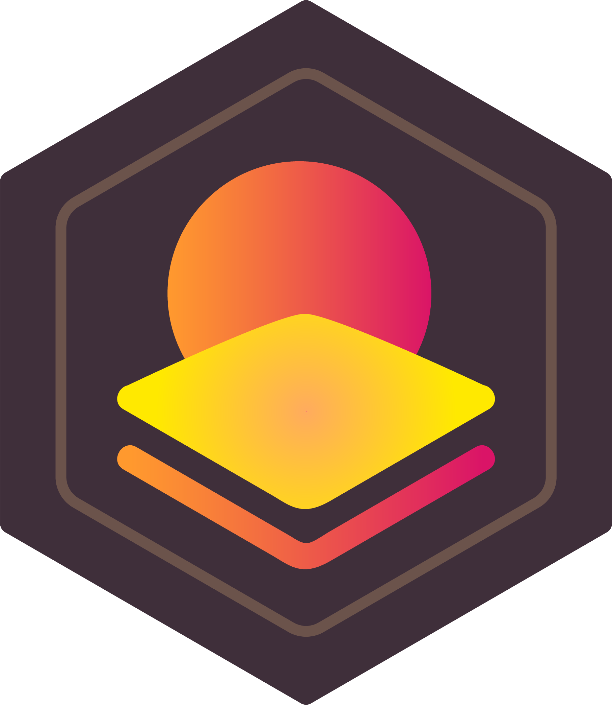

Singapore
Singapore Sri Lanka
Sri Lanka
Hardware · Product
Founder · full-stack
Stakco
A patent-pending rotating-ring puzzle turned into a cross-platform product — twelve sensor-driven web PWAs, a native Android app and a standalone Galaxy Watch build, a Unity simulator, and a React creator studio & webshop, all sharing one puzzle engine.
- React
- Kotlin
- Unity
- Web Bluetooth
- Wear OS
- GCP